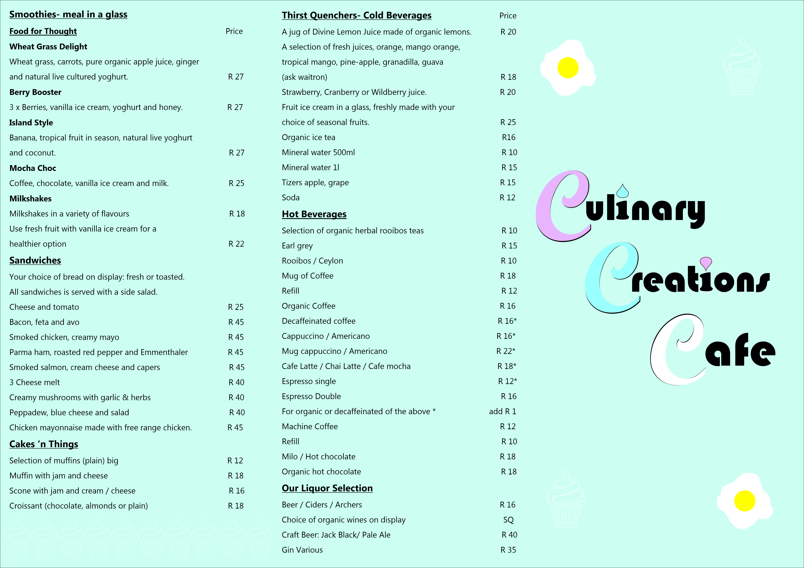
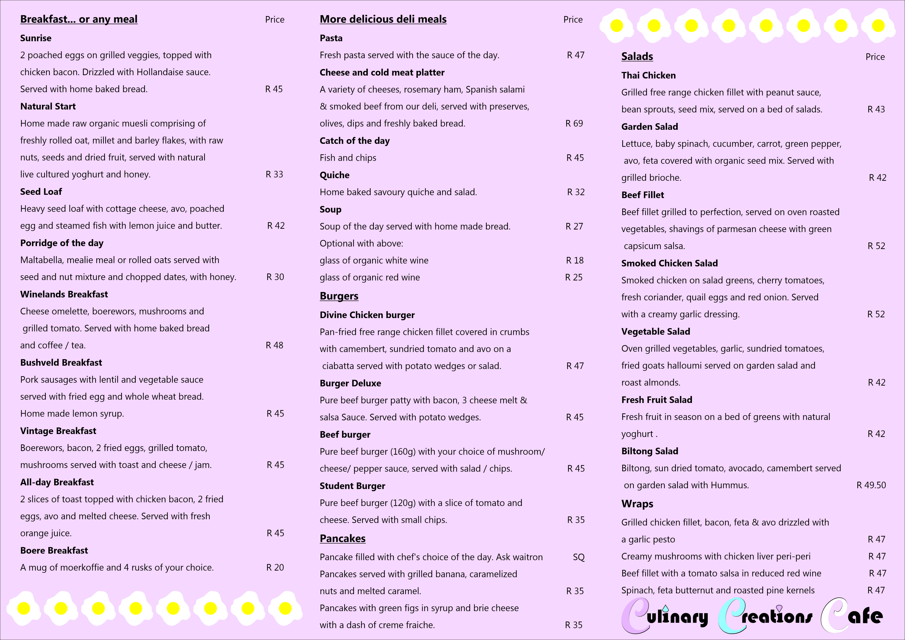
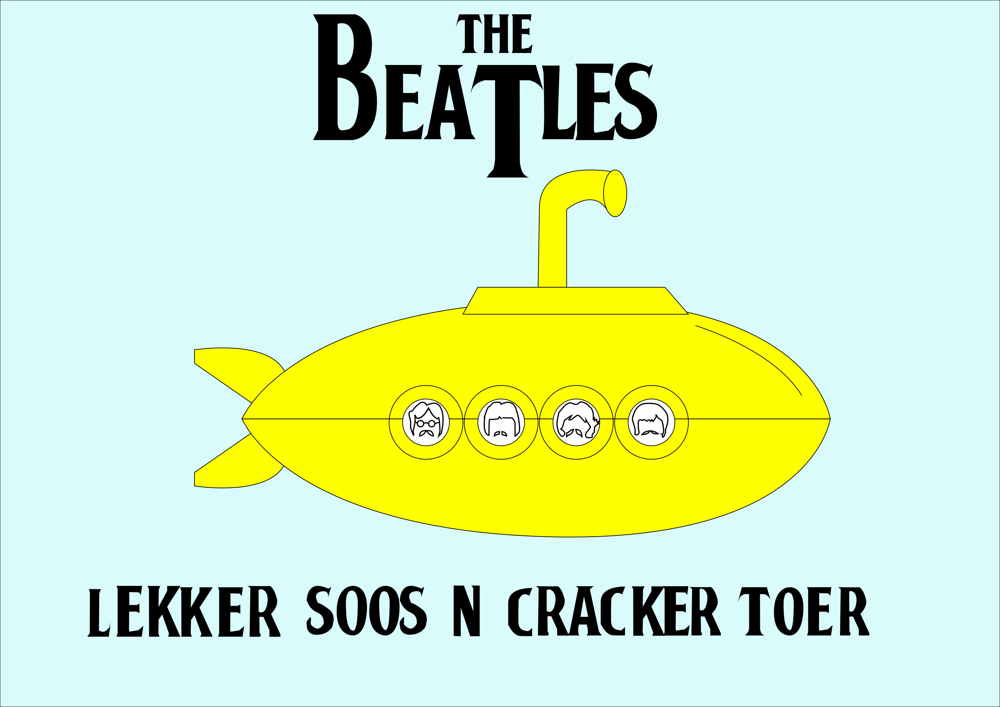
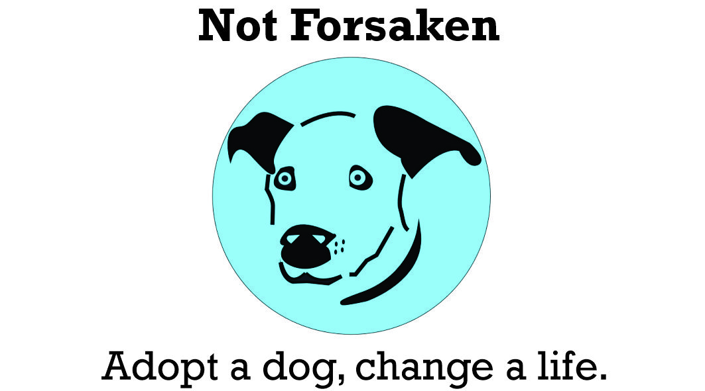
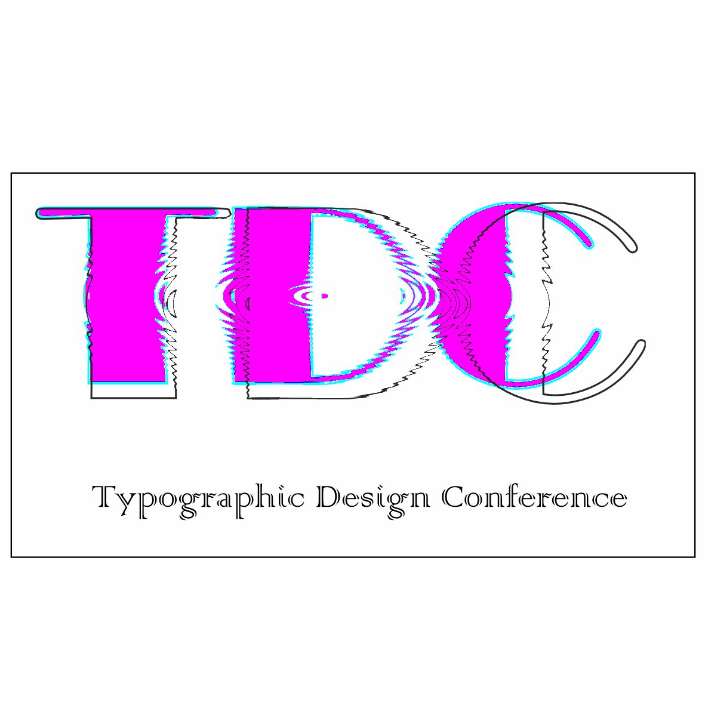
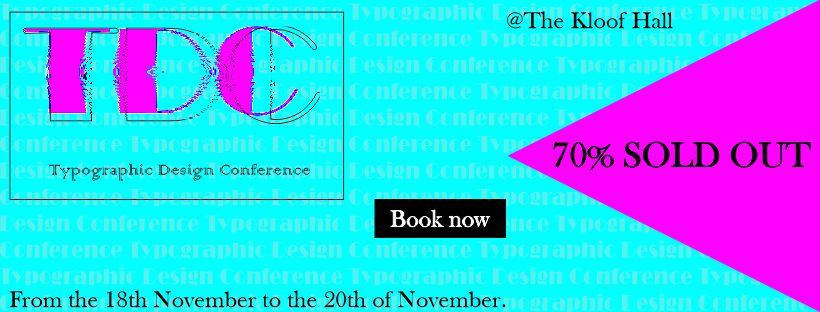
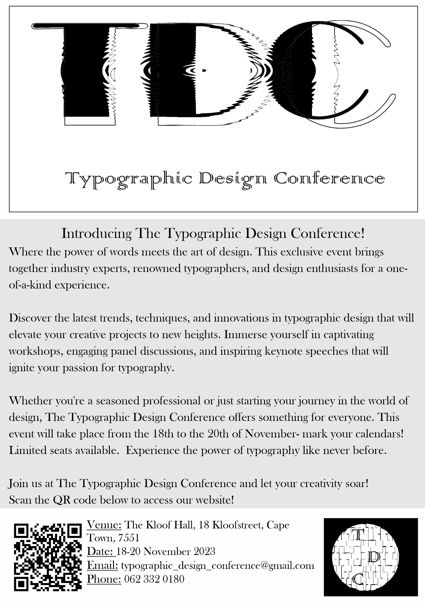
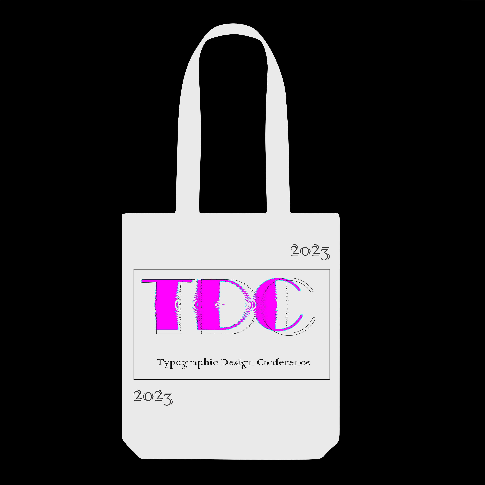

Brand design is the process of creating a distinctive visual identity that represents a company, product, or service.
It involves crafting a unique combination of colors, typography, logos, and other visual elements to communicate the essence and personality of a brand.
The aim of brand design is to establish a strong and memorable visual presence that resonates with the target audience, builds credibility, and fosters brand recognition and loyalty.
A well-executed brand design is not only visually appealing, but also strategically aligned with the brand's values and positioning in the market, helping to differentiate it from competitors
and create a lasting impact on consumers.
All of the Brand Design projects below were created by me using only CorelDRAW.
Various business logo's I have designed.
 Culinary Creations Cafe Menu I designed in 2021.

 These three logos were all nominated for the 2020 Logo Design Awards.
   I was the head designer for the 2022 Typographic Design Conference. I designed their logo and merchandise and was a spokesperson for multiple workshops.